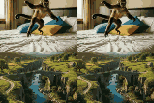
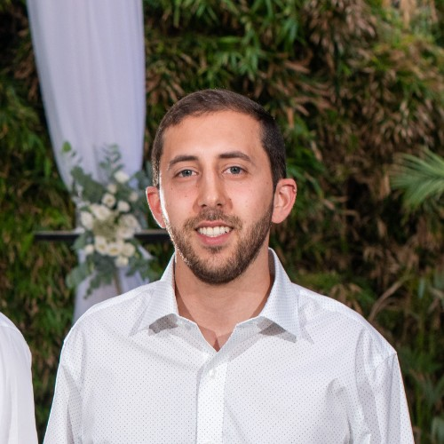
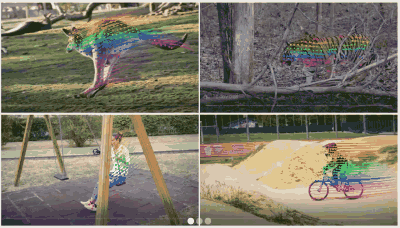
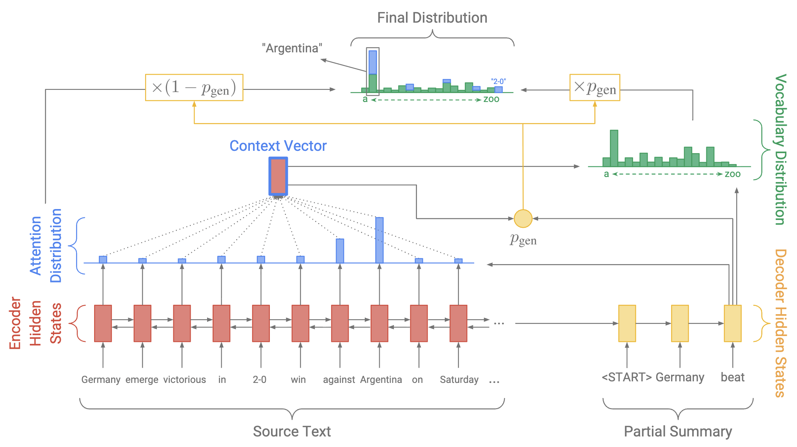
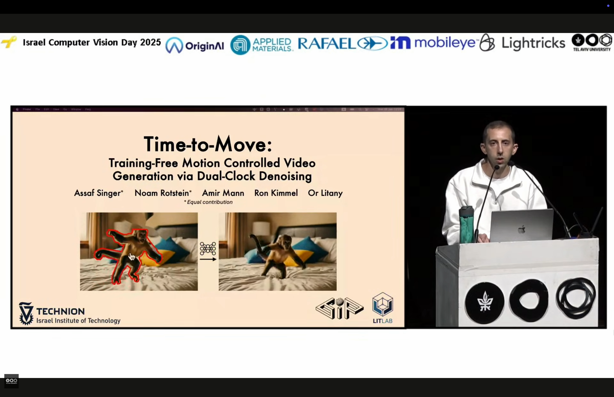
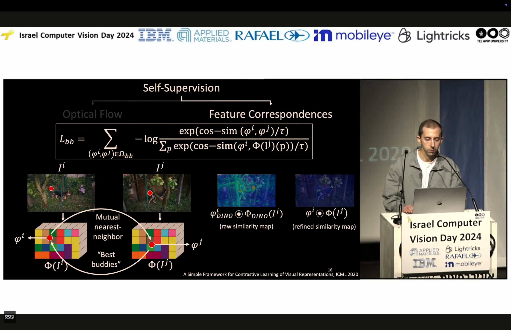

Time-to-Move: Training-Free Motion Controlled Video Generation via Dual-Clock Denoising
ICLR 2026 · ICLR ReALM-GEN Workshop · CVPR J2A Workshop

PhD student in Computer Science at the Technion, advised by Dr. Or Litany. I work on generative AI, video generation, and dynamic 3D/4D scene understanding.
I am a PhD student at the Technion - Israel Institute of Technology, advised by Dr. Or Litany. My research focuses on controllable video generation and dynamic 3D/4D scene understanding - specifically, how to reconstruct, interact with, and generate dynamic environments for next-generation autonomous systems.
Previously, I was a computer vision researcher at the Weizmann Institute of Science with Prof. Tali Dekel. I hold an M.Sc. in Computer Science from NYU, advised by Prof. Kyunghyun Cho and Prof. Katharina Kann, and a B.Sc. in Mathematics from Tel Aviv University. Before transitioning to academia, I spent three years as a data scientist at Pagaya Technologies, building machine learning models for credit risk and loan evaluation.

ICLR 2026 · ICLR ReALM-GEN Workshop · CVPR J2A Workshop

ECCV 2024


Oral presentation - Time-to-Move: Training-Free Motion Controlled Video Generation via Dual-Clock Denoising.

Oral presentation - DINO-Tracker: Taming DINO for Self-Supervised Point Tracking in a Single Video.
For inquiries or collaboration, please email me at assaf.singer@campus.technion.ac.il.